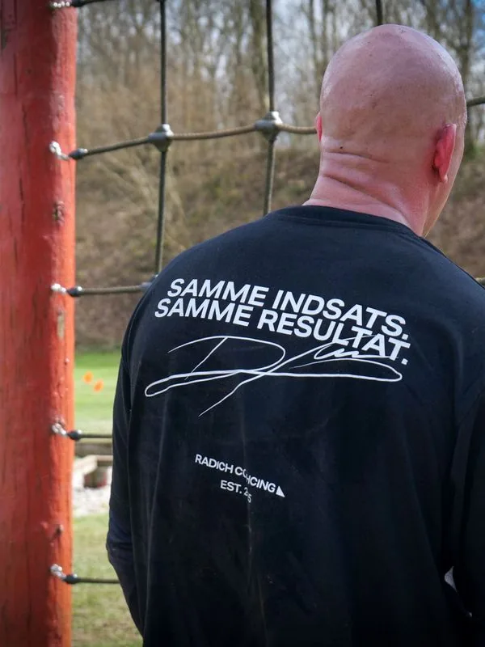
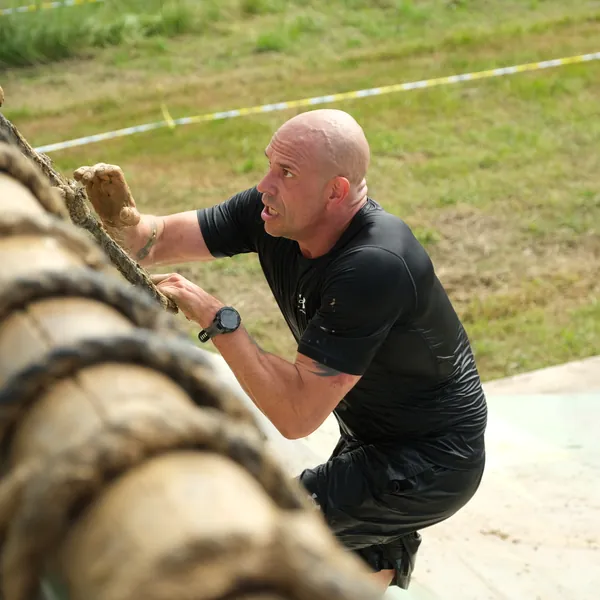
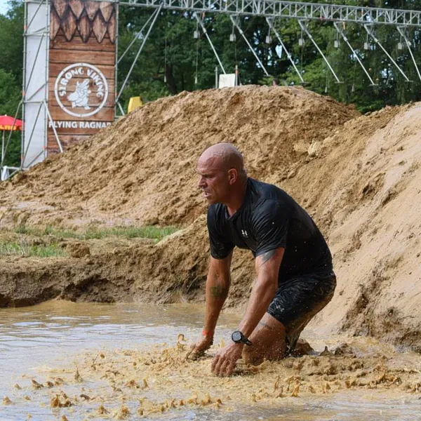
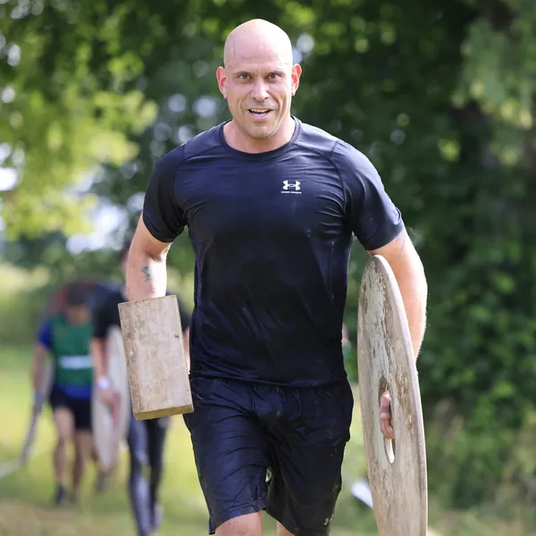
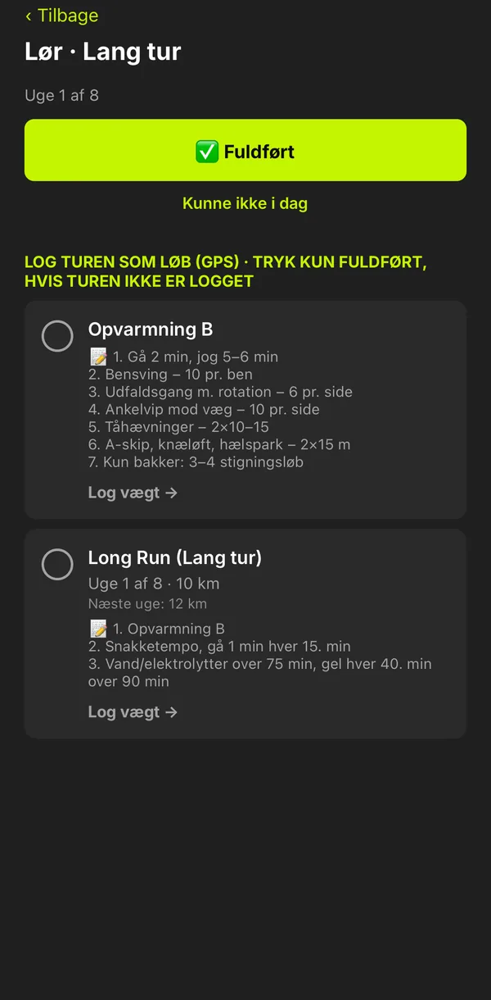
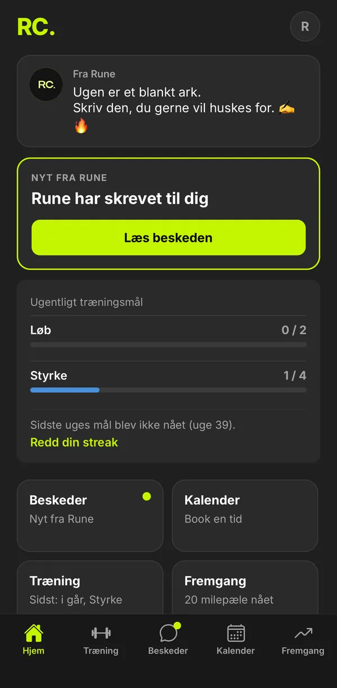
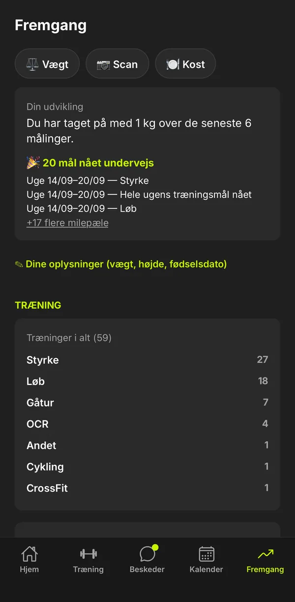

Radich Coaching
Fortrydelse
er
det dyreste
du ejer.
Den sidder i kroppen, i spejlet, i de valg du ikke tog.
Jeg er Rune. Jeg coacher dig tilbage til dig selv — uden omsvøb, uden facade.
Små skridt. Store forandringer.Tre lag.
Ét menneske.
Rigtig forandring sker ikke ved at fikse ét problem. Det handler om krop, sind og ansvarlighed — på én gang, i den rigtige rækkefølge.
Kroppen
Træning der passer til dig — ikke en skabelon. Vi bygger styrke og kapacitet på en måde du faktisk kan holde til, og som giver resultater du kan mærke.
Sindet
Iron Mindset er ikke et slogan. Det er en praksis. Vi arbejder med de mønstre og overbevisninger der holder dig fast — og erstatter dem med noget der bærer.
Ansvarlighed
"Vis mig din træning" er ikke kontrol — det er støtte. Er det aftalt, ved du, at jeg følger med. Det gør en forskel, når det er svært.
Ingen er nogensinde stået op en dag og har ønsket sig smerter, livsstilssygdomme eller overvægt!
Ikke perfektion.
Udvikling.
Jeg er ikke coachen der altid har haft styr på det.
Jeg har været det sted, hvor spejlet er det sværeste at kigge i. Hvor skammen sidder i kroppen, og viljen er der ingen af. Jeg kender følelsen af at svigte sig selv — og den ufatteligt lange vej tilbage derfra.
Jeg har trænet seriøst siden jeg var 18-20 — tung styrketræning, bodybuilding, power-træning, calisthenics. Snart 30 år med kroppen som laboratorium.
Mit vendepunkt kom da ryggen sagde fra. Læger fortalte mig, jeg måske aldrig ville løfte tungt igen. Aldrig løbe. Aldrig træne OCR.
Det der ramte hårdest var noget andet: tanken om ikke at kunne løfte mine børn.
Jeg valgte at kæmpe mig igennem det. Ikke hurtigt. Ikke perfekt. Men igennem.
Den rejse lærte mig, at fremskridt ikke handler om aldrig at falde. Det handler om at rejse sig igen — og at have nogen i sit hjørne, når man gør det.
I dag kan jeg dødløfte igen. Jeg løber OCR. Jeg kan løfte mine børn.
Og jeg bruger alt det, jeg er — fejlene, kampene, vejen tilbage — i mit arbejde som coach.
Igen og igen ser jeg mennesker finde styrke og overskud de havde glemt var der — med små skridt der faktisk holder.
Du behøver ikke starte stort. Du skal bare starte.
Ikke som facade. Som fundament.
Jeg står selv
på startlinjen.
Næste mål: Strong Viking Frankfurt, 3. juli 2027. Forhindringer, mudder og bakker — og 12 måneders træning, der skal holde hele vejen.
Jeg træner efter samme metode og i den samme app, som mine klienter bruger. Jeg ved, hvad det kræver at møde op — også de dage, hvor alt i en siger nej.
3. juli 2027Frankfurt



Ingen skabeloner.
Ingen pakkeløsninger.
Alle er forskellige. Forskellige mål, forskelligt udgangspunkt, forskelligt behov for støtte.
Derfor starter vi altid med en samtale — så vi finder ud af hvad der giver mening for dig, og hvad et forløb med mig konkret indebærer.
Personligt træningsprogram
Bygget til dig — ikke til nogen der ligner dig. Vi starter med din situation og arbejder derfra.
Løbende coaching
Opfølgning i det omfang, du har brug for — det aftaler vi til forsamtalen. Du er ikke alene med det. Det er pointen.
Mindset-arbejde
Kroppen gør hvad sindet tillader. Vi arbejder med begge — det er det der holder på den lange bane.
Din træning.
I lommen.
Er appen en del af dit forløb, samles det, vi aftaler, i din egen app. Dit program, dine tal og mig — ét sted.
Appen kan blandt andet:
- Vise dit program uge for uge, med dagens vægt og tal
- Fejre dine rekorder automatisk, når du slår dem
- Holde styr på dine ugemål
- Sende en video af din træning til mig, når vi har aftalt feedback
- Føre kostlog med billeder
Om appen er med, og hvad dit forløb ellers indeholder, aftaler vi til forsamtalen — ud fra det, du har brug for.



Nyt program september 26 mod Strong Viking 27
Det, folk
spørger om.
Hvad koster det?
Det afhænger af, hvad dit forløb skal indeholde. Efter forsamtalen får du et tilbud på mail med en fast pris. Ingen abonnementer — du binder dig aldrig til at betale løbende.
Er forsamtalen gratis?
Ja. Den er gratis og uforpligtende — på telefon, video eller ved et møde.
Hvor træner vi?
Fysisk træning foregår i Lemvig og omegn. Hvor præcis, aftaler vi til forsamtalen.
Hvor tit træner vi?
Det aftaler vi til forsamtalen — ud fra dit mål, din hverdag og det, du har brug for.
Skal jeg være i form for at starte?
Nej. Vi starter, hvor du er — og bygger op derfra.
Kan jeg få online coaching?
Kun efter særlig aftale. Skriv til mig, så finder vi ud af det.
Kan jeg fortryde?
Ja. Du har 14 dages fortrydelsesret, og forløbet starter først, når de 14 dage er gået. Læs mere i handelsbetingelserne.
Lad os
tage en snak.
Ingen forpligtelse. Ingen salgspitch.
- Du skriverFortæl lidt om hvor du er, og hvad du vil.
- Vi tager en snakUforpligtende. Vi finder ud af, hvad du har brug for, og hvad dit forløb skal indeholde.
- Du går i gangDu får et tilbud på mail. Siger du ja, går vi i gang.
Fysisk træning i Lemvig og omegn. Coaching efter aftale.